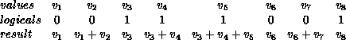
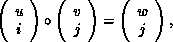
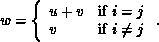

Example
This example uses a user-defined operation to produce a segmented scan. A segmented scan takes, as input, a set of values and a set of logicals, and the logicals delineate the various segments of the scan. For example:

The operator that produces this effect is,

where,

Note that this is a non-commutative operator. C code that implements it is given below.
typedef struct {
double val;
int log;
} SegScanPair;
/* the user-defined function
*/
void segScan( SegScanPair *in, SegScanPair *inout, int *len,
MPI_Datatype *dptr )
{
int i;
SegScanPair c;
for (i=0; i< *len; ++i) {
if ( in->log == inout->log )
c.val = in->val + inout->val;
else
c.val = inout->val;
c.log = inout->log;
*inout = c;
in++; inout++;
}
}
Note that the inout argument to the user-defined function
corresponds to the right-hand operand of the operator. When using
this operator, we must be careful to specify that it is non-commutative,
as in the following.
int i,base;
SeqScanPair a, answer;
MPI_Op myOp;
MPI_Datatype type[2] = {MPI_DOUBLE, MPI_INT};
MPI_Aint disp[2];
int blocklen[2] = { 1, 1};
MPI_Datatype sspair;
/* explain to MPI how type SegScanPair is defined
*/
MPI_Address( a, disp);
MPI_Address( a.log, disp+1);
base = disp[0];
for (i=0; i<2; ++i) disp[i] -= base;
MPI_Type_struct( 2, blocklen, disp, type, &sspair );
MPI_Type_commit( &sspair );
/* create the segmented-scan user-op
*/
MPI_Op_create( segScan, False, &myOp );
...
MPI_Scan( a, answer, 1, sspair, myOp, root, comm );